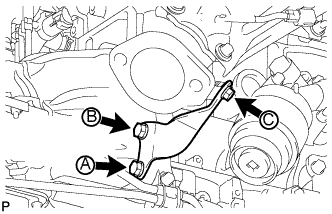

МЕХАНИЧЕСКАЯ ТРАНСМИССИЯ В СБОРЕ > УСТАНОВКА |
| 1. УСТАНОВИТЕ РАЗДАТОЧНУЮ КОРОБКУ В СБОРЕ |
Для моделей с 1KD-FTV:
Закрепите раздаточную коробку в сборе с помощью 8 болтов и 2 кронштейнов.
Кроме моделей с 1KD-FTV:
Закрепите раздаточную коробку в сборе с помощью 8 болтов и кронштейна.
| 2. УСТАНОВИТЕ БЛОК МЕХАНИЧЕСКОЙ ТРАНСМИССИИ В СБОРЕ |
Перед установкой механической трансмиссии удостоверьтесь, что на поверхности блока цилиндров двигателя, вступающей в контакт с механической трансмиссией, имеются 2 штифта.
Совместите первичный вал с ведомым диском сцепления и установите блок трансмиссии на двигатель.
Вверните 8 болтов.
| 3. ПОДСОЕДИНИТЕ ШЛАНГ САПУНА МЕХАНИЧЕСКОЙ ТРАНСМИССИИ И РАЗДАТОЧНОЙ КОРОБКИ В СБОРЕ |
Подсоедините 2 шланга сапуна к кронштейну.
Подсоедините 3 шланга сапуна к переходнику раздаточной коробки и раздаточной коробке.
| 4. ПОДСОЕДИНИТЕ ЖГУТ ПРОВОДОВ |
Подсоедините 2 разъема и 4 зажима.
| 5. УСТАНОВИТЕ ОПОРУ КОЛЛЕКТОРА |
|  |
Закрепите опору выпускного коллектора 3 болтами.
| 6. УСТАНОВИТЕ ЗАДНЮЮ ПОДУШКУ ОПОРЫ ДВИГАТЕЛЯ № 1 |
Закрепите подушку опоры и переднюю подушку опоры двигателя 5 болтами.
| 7. УСТАНОВИТЕ ПОПЕРЕЧИНУ РАМЫ № 3 В СБОРЕ |
Установите поперечину рамы и закрепите ее 4 болтами и 4 гайками.
Вверните 4 болта в подушку опоры.
| 8. УСТАНОВИТЕ ЛЕВЫЙ КРОНШТЕЙН ЭЛЕМЕНТА ПЕРЕДНЕЙ ПОДВЕСКИ |
Закрепите кронштейн элемента 4 болтами.
| 9. УСТАНОВИТЕ ПРАВЫЙ КРОНШТЕЙН ЭЛЕМЕНТА ПЕРЕДНЕЙ ПОДВЕСКИ |
Закрепите кронштейн элемента 4 болтами.
| 10. УСТАНОВИТЕ СТАРТЕР В СБОРЕ |
Для моделей мощностью 1,4 кВт:
Установите стартер (Нажмите здесь).
Для моделей мощностью 2,0 кВт:
Установите стартер (Нажмите здесь).
| 11. ПОДСОЕДИНИТЕ РАБОЧИЙ ЦИЛИНДР СЦЕПЛЕНИЯ В СБОРЕ |
Подсоедините рабочий цилиндр сцепления с помощью 2 болтов.
| 12. УСТАНОВИТЕ ПЕРЕДНИЙ КАРДАННЫЙ ВАЛ В СБОРЕ |
Установите передний карданный вал (Нажмите здесь).
| 13. УСТАНОВИТЕ КАРДАННЫЙ ВАЛ В СБОРЕ |
Установите карданный вал (Нажмите здесь).
| 14. ДОБАВЬТЕ МАСЛО ДЛЯ МЕХАНИЧЕСКИХ ТРАНСМИССИЙ |
| 15. УСТАНОВИТЕ НИЖНИЙ ЗАЩИТНЫЙ КОЖУХ КАРТЕРА РАЗДАТОЧНОЙ КОРОБКИ |
Закрепите нижнюю защиту 4 болтами.
| 16. УСТАНОВИТЕ НАПОЛЬНЫЙ РЫЧАГ ПЕРЕКЛЮЧЕНИЯ ПЕРЕДАЧ В СБОРЕ |
Закройте крышку рычага переключения передач тканью.
Надавливая на крышку рычага переключения передач, поверните ее по часовой стрелке, чтобы установить.
| 17. УСТАНОВИТЕ ЧЕХОЛ № 1 РЫЧАГА ВЫБОРА И ПЕРЕКЛЮЧЕНИЯ ПЕРЕДАЧ |
Установите чехол рычага выбора и переключения передач и закрепите его 4 винтами.
Введите в зацепление 2 фиксатора.
| 18. УСТАНОВИТЕ ОБЛИЦОВКУ ПАНЕЛИ ПОЛА В СБОРЕ |
Подсоедините все разъемы.
Введите в зацепление 8 фиксаторов и 2 захвата и установите облицовку панели пола.
| 19. УСТАНОВИТЕ РУКОЯТКУ РЫЧАГА ПЕРЕКЛЮЧЕНИЯ ПЕРЕДАЧ В СБОРЕ |
Установите рукоятку на рычаг переключения передач.
| 20. ПОДСОЕДИНИТЕ ПРОВОД К ОТРИЦАТЕЛЬНОМУ ВЫВОДУ АККУМУЛЯТОРНОЙ БАТАРЕИ |